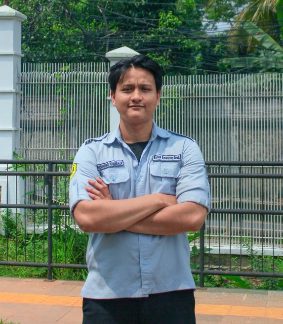

Muhamad Nabhan Azmi
Internet of Things, Robotika & Intelligent Control System.

ABOUT ME
Saya adalah mahasiswa S-1 Teknik Elektro di Universitas Pembangunan Nasional "Veteran" Jakarta dengan minat kuat pada solusi berbasis teknologi tepat guna, Internet of Things (IoT), robotika, Intelligent Control System, riset inovasi, dan komunikasi publik.
Saat ini menjabat sebagai Head of Department Human Resource Development (HRD) di KSM Internet of Things UPNVJ, anggota Intelligent Control System Research Team, serta Asisten Laboratorium Teknik Elektro. Saya berpengalaman dalam perancangan 3D (Fusion 360), desain & etching PCB, penulisan esai ilmiah kompetitif, serta memandu acara akademik sebagai Pembicara, Moderator, dan Master of Ceremonies (MC).

Featured Engineering, Robotics & Intelligent Control Projects
Proyek sistem kendali cerdas, ekosistem IoT & Edge AI, robotika AGV/Sumo/Transporter, desain PCB, serta riset teknologi tepat guna.
Pengalaman Riset, Organisasi & Akademik
Rekam jejak di Intelligent Control System Research Team, KSM IoT UPNVJ, Google Indonesia, serta asistensi pengajaran di Laboratorium Teknik Elektro.

Universitas Pembangunan Nasional "Veteran" Jakarta
S-1 Teknik Elektro (Electrical Engineering)
"Pendidikan bukan sekadar mempelajari fakta, tetapi melatih pikiran untuk berpikir."
Fokus studi: Internet of Things (IoT), Robotika, Intelligent Control System, Pengukuran Besaran Listrik, dan Sistem Digital.
SMA Islam As-Syafi'iyah 02 Bekasi
Matematika dan Ilmu Pengetahuan Alam (MIPA)
Ketua Paskibra (2022–2023) & Ketua Badan Pengawas Organisasi (2023–2024).
CV Interaktif (ID / EN) & Google Drive
Cetak CV dwibahasa langsung dari halaman ini atau buka dokumen Resume PDF di Google Drive.
Public Speaking, Master of Ceremonies & Volunteer Operations
Setiap peran Pembicara IoT, Moderator, Master of Ceremonies (MC), dan Volunteer Operasional ditampilkan secara terpisah berdasarkan masing-masing acara.
Disiplin Teknis & Kapabilitas Terhubung
Tiga pilar kapabilitas utama yang menghubungkan sistem tertanam & kendali cerdas (IoT & Intelligent Control), fabrikasi perangkat keras (3D CAD & PCB), dan kepemimpinan organisasi.
IoT, Intelligent Control & Robotics
Pengembangan sistem mikrokontroler ESP & Arduino, algoritma kendali Logika Fuzzy & Dynamic Programming, navigasi AGV Omni-Wheel, serta integrasi sensor-aktuator dan Edge AI.
Hardware Prototyping, 3D CAD & PCB
Perancangan mekanik 3D dan pencetakan 3D (Fusion 360 & Ultimaker Cura), desain skematik & simulasi rangkaian (Proteus & EasyEDA), hingga fabrikasi/etching fisik Printed Circuit Board (PCB).
Tech Leadership, Education & Operations
Kepemimpinan SDM & kurikulum Design Thinking di KSM IoT, asistensi laboratorium Teknik Elektro (>100 praktikan), edukator IoT & Master of Ceremonies (MC), serta operasional acara berskala besar.
Sertifikasi Teknis, Penghargaan & Mandat Akademik
Kredensial sertifikasi AI & rekayasa, capaian kompetisi inovasi dan robotika, serta mandat kepemimpinan riset dan laboratorium.
-
Top 1 Tim SDGs Future Leaders Regional Jakarta–Tangerang (2026)Astra Honda SDGs Future Leaders (Proyek KARSA) — "Sistem Pengering Hibrida Cerdas Penyelamat Nilai Ekonomi Kopi Desa Talang Empat di Era Krisis Iklim".
-
Finalis Kompetisi Esai Ilmiah Nasional IFF (2026)Karya: "Eco-Anxiety ke Eco-Preneur: Mengubah Kecemasan Generasi Z Menjadi Kekuatan Ekonomi Hijau Menuju Indonesia Emas 2045".
-
Top 4 Kompetisi Robot Sumo FIK FAIR UPNVJBEM FIK UPN "Veteran" Jakarta — Pengembangan perangkat keras & sistem kendali Robot Sumo berbasis ESP.
-
Best of Staff Division — Bela Negara Festival Vol. 7Penghargaan staf terbaik Divisi General Support dalam operasional festival berskala ±9.000 pengunjung.
-
Google Student Ambassador — Class of 2026No. GSA26/B1/GRAD/XXVI-01/GSAID261143 — Terpilih dari 81.000 mahasiswa nasional dalam kepemimpinan adopsi Google AI di lingkungan kampus.
-
AI for Work & Career Readiness with Google AI ProductsNo. 01813/H8/CSR/MBA2/IV/2026 — Hacktiv8 Indonesia × AVPN & Google.org (Maju Bareng AI, 10 Jam Pembelajaran, 28 Apr 2026).
-
IBM SkillsBuild — Generative AI & IBM Granite Suite (3 Sertifikat)Code Generation & Optimization Using IBM Granite (MDL-566), IBM Granite Models for Software Development (MDL-567), dan Use Generative AI for Software Development (MDL-504).
-
Sertifikat Asisten Praktikum Fakultas Teknik UPNVJ (3 Sertifikat)Sistem Digital (645/UN61/SERTF/2026/FT), Fisika (626/UN61/SERTF/2026/FT), & Pengukuran Besaran Listrik (SGAS/155.1/UN61/2025/FT).
-
Intelligent Control System Research TeamTim riset sistem kendali cerdas (Sep 2026 – Sekarang) yang mengembangkan navigasi AGV Omni-Wheel berbasis Dynamic Programming, PJU Surya Logika Fuzzy, dan sistem otonom.
-
Asisten Laboratorium Teknik Elektro UPNVJMembimbing praktikum Pengukuran Besaran Listrik, Fisika Dasar, dan Sistem Digital bagi lebih dari 100 mahasiswa Teknik Elektro (Agu 2025 – Sekarang).
-
Head of Department HRD — KSM IoT UPNVJ & Google Student AmbassadorMemimpin pengembangan SDM dan riset inovasi IoT di KSM IoT UPNVJ (Jan 2026 – Sekarang) serta menuntaskan mandat Google Student Ambassador (Apr – Jul 2026).